"Mottainai" is a Japanese cultural concept emphasizing the shame of something going to waste without having made use of its full potential. This project explores how to encourage individual-level upcycling of household plastic waste given Japan's high disposal costs and the gap between public perception and the reality of recycling.
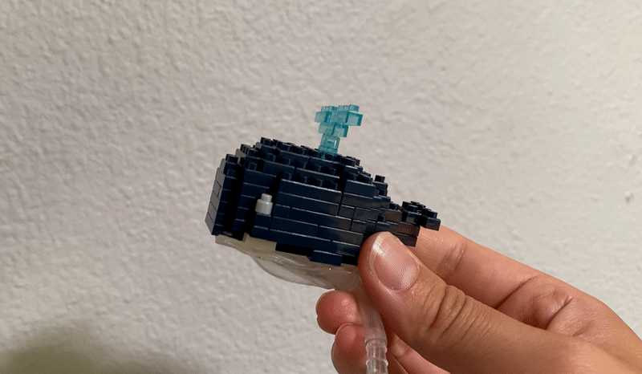
Japan maintains some of the world's highest plastic consumption and recycling rates — yet a significant gap exists between public perception and reality. Despite careful sorting, 63% of Japan's plastic waste undergoes thermal recycling (burning for fuel or energy), and 46% of total plastic waste is exported to Southeast Asian nations increasingly restricting foreign waste imports.
Rooted in the concept of mottainai — a Japanese expression of regret at waste — this project examined how cultural values, behavioral patterns, and design interventions can shift how individuals engage with plastic waste at home.
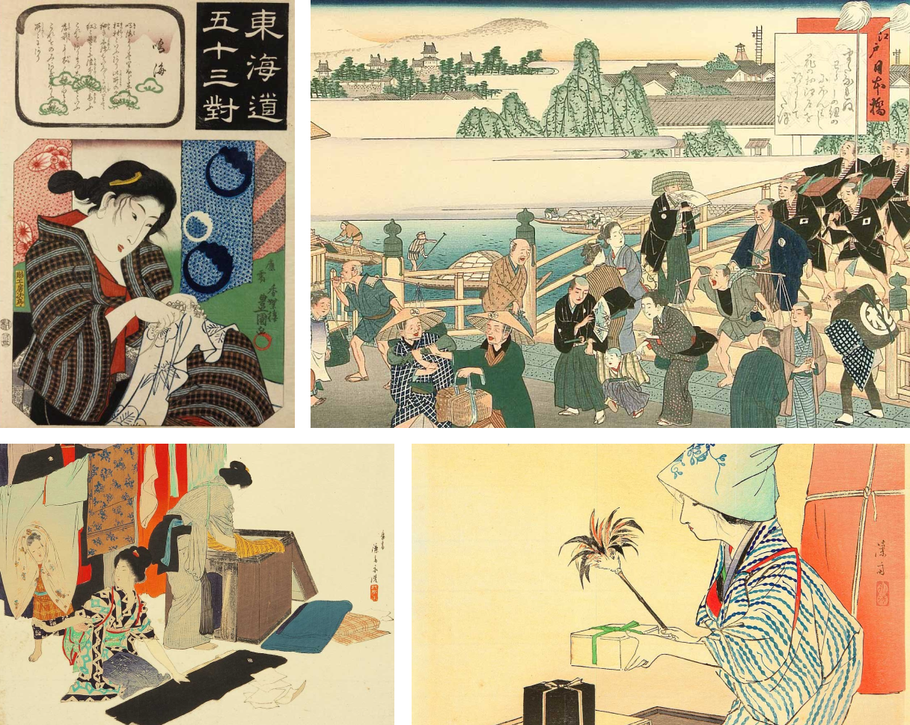
Historical Japanese depictions of upcycling in craftmaking traditions.
My research began with a visit to Itabashi Incineration Plant — one of Tokyo's 23 incineration facilities — where I discovered that regardless of how carefully individuals sort their waste, it ultimately ends up incinerated or in landfill.
I then conducted interviews with 18–42 year-old Japan residents — frequent convenience and grocery store consumers — many of whom had not visited an incineration plant in over a decade. Their waste types and behavioral patterns revealed a consistent disconnect between effort and impact.
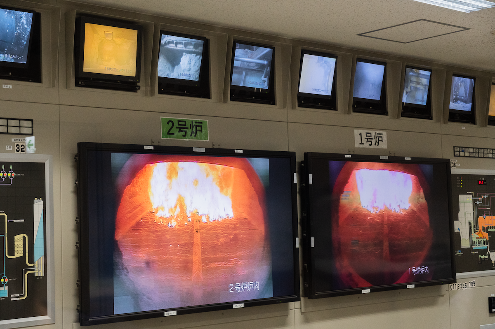
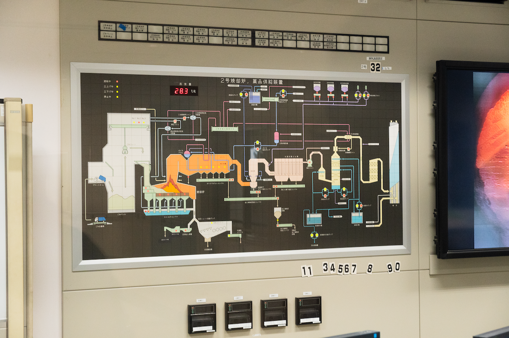
Field visit to Itabashi Incineration Plant, Tokyo.
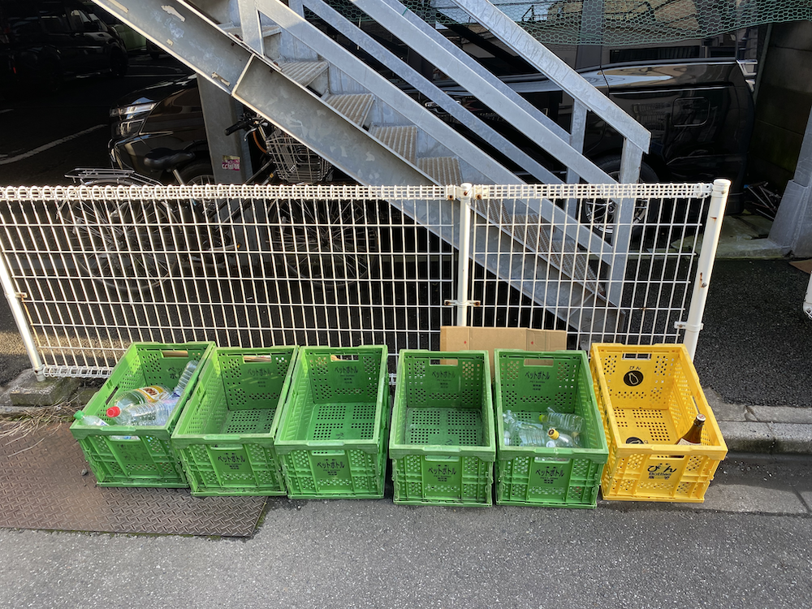
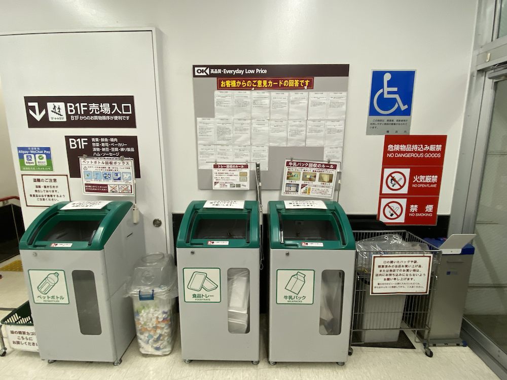
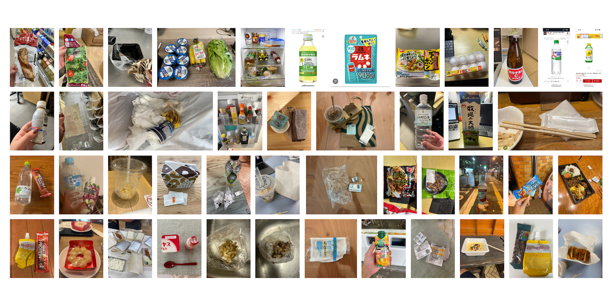
Most residents are unaware that "recycled" plastic is largely burned rather than reprocessed.
Sustainable alternatives must compete economically to gain adoption.
Interventions should leverage existing cultural values — like mottainai — rather than override them.
People want tangible, visible evidence of their own impact — not abstract systemic change.
The design intervention takes the form of an inflatable construction kit — reimagining constructivist toys and exploring novel fabrication methods using common household plastics. The kit invites users to transform plastic packaging into inflatable building components, making the process of upcycling tangible, playful, and personally rewarding.
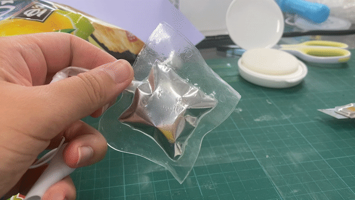
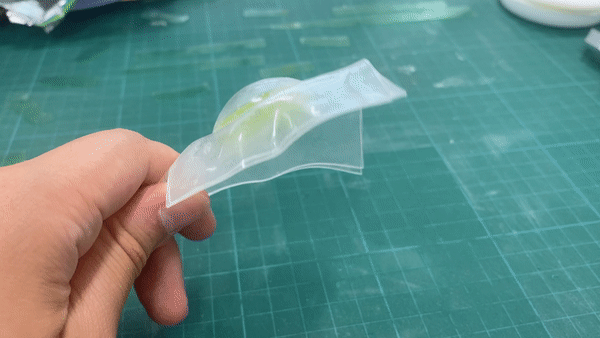
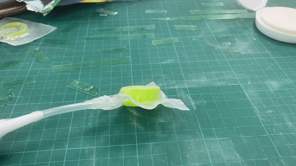
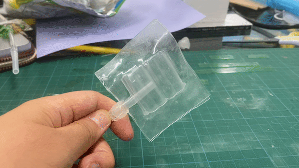
The material research component of this project — exploring plastic fabrication methods — informed later work in the Upcycling Workshop @ AkeruE.